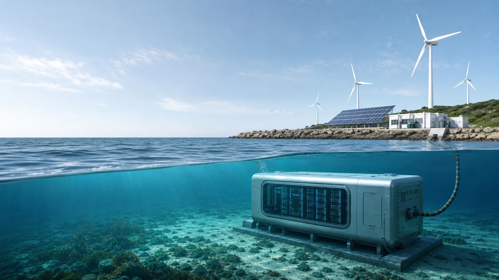

Annual average energy use
69–144M
MWh of estimated global HPC consumption at current utilization levels.

HiMCM 2024 · Outstanding Paper
A data-driven model of how high-performance computing changes global energy demand, carbon emissions, and community access to electricity through 2030.
Key findings
Annual average energy use
69–144M
MWh of estimated global HPC consumption at current utilization levels.
Projected 2030 emissions
818–1,054M
Metric tons of CO2 across the model's minimum and maximum forecasts.
Cleaner 2030 energy mix
77% lower
With generation shifted to 60% renewables and 20% nuclear power.
Forecast / 2024–2030
The shaded range captures model uncertainty. Even the lowest 2030 estimate is more than ten times the 2024 baseline.
2030 model range: 818–1,054M metric tons CO2
2030 intervention scenario
When 60% of generation comes from renewables and 20% from nuclear power, the model estimates a 77% reduction in HPC-related carbon emissions.
Community impact
Without regional grid upgrades, the model predicts a steep decline in the maximum electricity available to nearby residents and businesses.
2024
Community access before the projected HPC load increase.
2028
The first major threshold identified by the model.
2030
A severe constraint on households and local businesses.
From model to action
01
Use electricity-price incentives to place HPC centers near island and offshore renewable resources.
02
Support local wind, solar, and marine-energy infrastructure through targeted generation subsidies.
03
Develop seawater cooling technology to lower PUE and reduce thermal-management energy demand.
Continue reading
The complete 25-page HiMCM paper includes the methodology, sensitivity analysis, forecasting models, and policy recommendations behind these results.
Read more